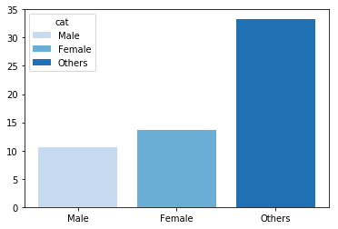
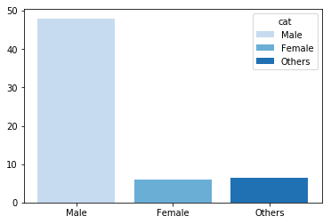
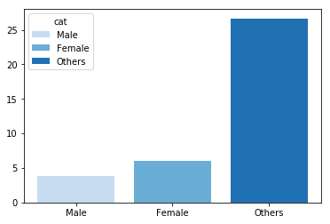
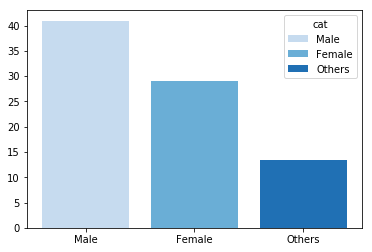
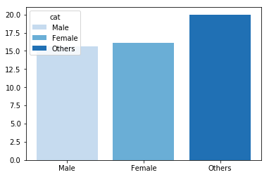
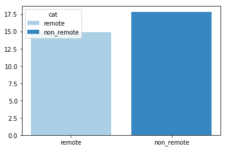

Here are a few Insights:-

1. This Graph shows which gender is more oftenly distracted by their mental illness or health condition. Gender "others" gets most often distracted.
Fig 1. 'Often' Work-Interference Comparison between Genders.

2. This Graph shows which gender is more insecure or concerned about their anonymity while sharing their information to a third person and according to the insight males are more anxious about their anonimity.
Fig 2. Anonymity Insecurity between Genders.

3. This Graph shows that the gender 'Others' is more afraid of the negative consequence after sharing their information about their mental and physical health to other people.
Fig 3. Gender's Fear towards Negative Consequence on Sharing their health Info.

Whereas Males doesn't have a negative view of the consequence after sharing their information about their mental and physical health to other people
Fig 4. Gender's Openness towards Negative Consequence on Sharing their health Info.

4.This Graph shows that the gender 'Others' is least willing to share any information with their Coworkers and Supervisor.
Fig 5. Gender's willingness to discuss or share their health info to the Coworkers and Supervisor.

5. Employees who are not remotely working are less prone to get distracted or interfered in there work.
Fig 6. Mental health work - Interference between Remote and Non-Remote workers